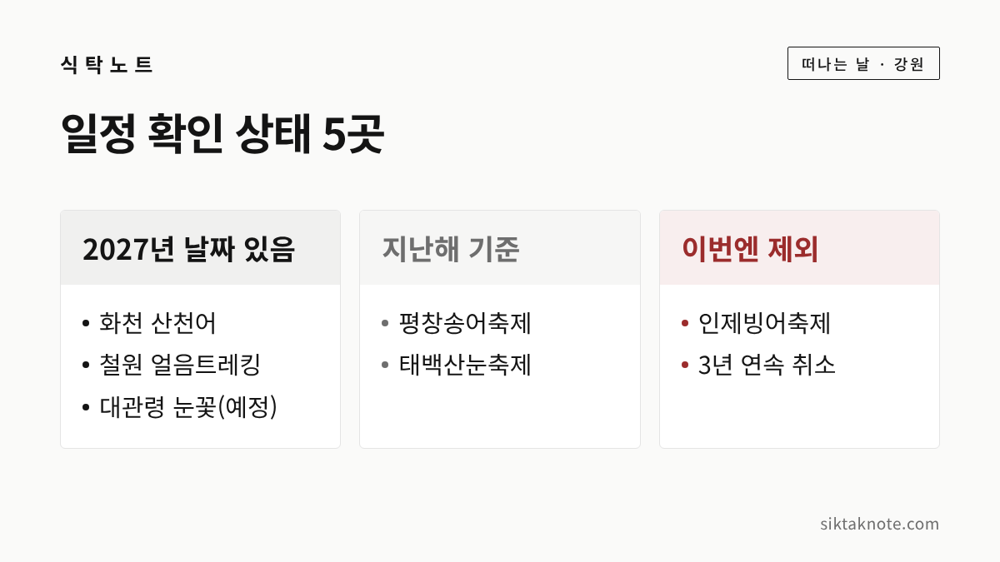
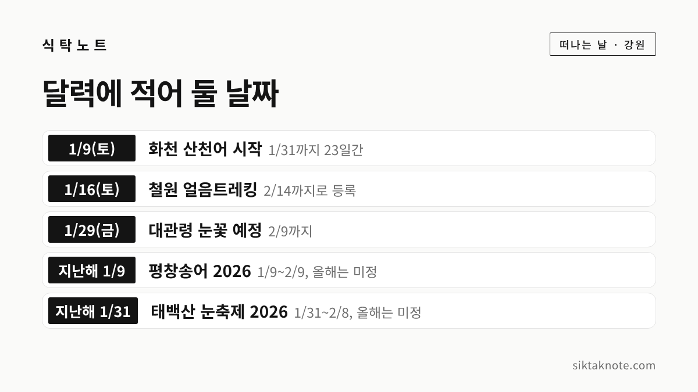

겨울 강원 축제 5곳, 일정이 나온 곳과 아직인 곳

3줄 요약
- 겨울 강원 축제 5곳 가운데 2027년 날짜가 올라온 곳은 화천 산천어, 철원 얼음트레킹, 대관령 눈꽃 세 곳입니다.
- 평창송어축제와 태백산눈축제는 올해 일정을 찾지 못해 지난해 기간만 참고로 적었어요.
- 얼음 상태에 따라 개막이 바뀌는 축제가 많으니, 예약 전에 누리집 공지를 꼭 다시 확인하시길 권합니다.
행사 정보
- 기준일
- 2026년 11월 12일
- 범위
- 2027년 1월~2월에 열리는 겨울 강원 축제 5곳 (12월에 시작하는 곳은 확인하지 못함)
- 확인 방법
- 대관령눈꽃축제 누리집 공지 1건을 직접 확인, 나머지는 언론 보도와 한국관광공사 자료를 옮긴 정보 사이트로 확인
- 날짜가 다른 곳
- 대관령눈꽃축제 시작일을 한 정보 블로그는 1월 30일로 적었고, 축제 누리집 공지는 1월 29일 (공지를 따름)
- 요금
- 2027년 요금은 모두 미확정. 화천은 체험료 인상안이 검토 중이라는 보도만 있음
2026.11.12 확인 기준. 화천 산천어축제 누리집은 열리지 않아 한국관광공사 정보와 보도로 확인했고, 평창송어축제·철원문화재단·태백시 관광 누리집은 열어 보지 못했어요. 가시기 전에 위 링크에서 올해 공지를 한 번 더 확인하세요.
겨울 강원 하면 얼음낚시와 눈조각이 먼저 떠오르는데요. 다만 올겨울 일정이 모두 나온 것은 아니었습니다. 이 글에는 다섯 곳을 골라 담고, 2027년 날짜가 올라온 곳과 아직 지난해 기준으로만 알 수 있는 곳을 나누어 적었어요. 11월 12일에 확인한 내용이라 그 뒤에 바뀐 소식은 담지 못했습니다.

읽는 방법은 간단해요. '2027년'이라고 적은 날짜는 올해 공지나 등록 정보에서 확인한 일정이고, '지난해'라고 적은 날짜는 2026년에 열린 기간을 참고로 적은 것입니다. 지난해 날짜를 올해 일정으로 믿고 숙소를 잡으시면 곤란해요. 축제 누리집 공지를 직접 열어 확인한 곳은 대관령 한 곳뿐이고, 나머지는 보도와 한국관광공사 자료를 옮긴 정보 사이트로 확인했습니다.
1. 화천 산천어축제, 2027년 1월 9일부터 31일까지
한국관광공사 '대한민국 구석구석' 축제 정보에 2027년 1월 9일(토)부터 31일까지로 등록되어 있어요. 장소는 화천읍 산천어길 일원이고, 주최는 화천군과 재단법인 나라입니다. 축제 재단이 낸 광고 협찬기업 모집 공고에도 같은 기간(23일간)이 적혀 있다고 아주뉴스가 전했습니다. 다만 구석구석 페이지에는 '2027년도 축제 내용은 업데이트 중'이라고 되어 있어서 프로그램은 아직 알 수 없어요.
눈여겨보실 건 체험료예요. 2026년에는 성인 얼음낚시 체험료가 1만 5천 원이었고, 농특산물 교환권 5천 원을 돌려주었다고 합니다. 화천군은 체험료를 2만 5천 원 수준으로 올리고 돌려주는 금액을 1만 5천 원으로 늘리는 방안을 검토 중이라고 MTN과 아주뉴스가 보도했어요. 검토 단계라 확정된 금액은 아니에요. 문의는 1688-3005입니다.

2. 평창송어축제, 올해 일정은 아직 찾지 못했어요
2027년 일정은 제가 확인한 자료에서 나오지 않았어요. 참고로 2026년에는 20주년을 맞아 1월 9일부터 2월 9일까지 진부면 오대천 일원에서 32일간 열렸어요. 원래 1월 1일 개막 예정이었는데 이상 고온 때문에 일정이 조정됐다고 헤럴드경제가 전했습니다.
정보 사이트 가운데에는 2026년 12월 31일부터 2027년 2월 1일로 올려 둔 곳도 있는데요. 그곳이 '예년 기준'이라고 밝히고 있어서 이 글에서는 날짜로 쓰지 않았어요. 얼음 상태에 따라 개막이 달라질 수 있는 축제라서, 공식 누리집의 공지를 확인한 뒤에 텐트 낚시 같은 예약을 하시는 편이 안전하겠습니다.

3. 철원 한탄강 얼음트레킹, 2027년 1월 16일부터 2월 14일까지로 등록
한국관광공사 정보에는 2027년 1월 16일부터 2월 14일까지로 올라 있어요. 이 페이지에도 '2027년도 축제 내용은 업데이트 중'이라는 안내가 있습니다. 주행사장은 승일교 아래이고, 요금은 1만 원에 철원사랑상품권 5천 원으로 돌려받는다고 나오는데요. 이 요금이 2027년 것인지는 확실하지 않습니다.
한 가지 걸리는 점은 기간입니다. 2026년에는 1월 17일부터 25일까지 9일간 열렸다는 보도가 있었는데, 올해는 한 달 가까이로 등록되어 있거든요. 행사 기간과 트레킹 코스 운영 기간이 다른지는 확인하지 못했습니다. 지난해 보도로는 태봉대교에서 마당바위, 승일교, 고석정, 순담계곡을 거치는 약 8km 구간이었어요. 주최는 철원문화재단(033-455-7072)입니다.

4. 대관령눈꽃축제, 2027년 1월 29일부터 2월 9일까지(예정)
축제 누리집 공지에서 직접 확인한 곳입니다. 2026년 9월 8일에 올라온 입점업체 참가 신청 공고에, 제35회 대관령눈꽃축제가 2027년 1월 29일(금)부터 2월 9일(화)까지 오전 9시 30분~오후 5시 30분으로 '(예정)' 표기되어 있었어요. 한 정보 블로그는 1월 30일 시작으로 적었지만, 공지 원문을 따랐습니다.
지난해 제34회는 2월 13일부터 22일까지 대관령면 송천 일원에서 열렸고, 눈조각 전시와 알몸 마라톤, 컬링·크로스컨트리 체험이 있었다고 경향신문이 전했어요. 올해는 지난해보다 보름쯤 앞당겨지는 셈입니다. 문의는 대관령면축제위원회 033-335-3995입니다.

5. 태백산눈축제, 올해 일정은 공지를 기다려야 해요
이곳도 2027년 일정은 찾지 못했어요. 지난해 제33회는 1월 31일부터 2월 8일까지 9일간 태백산국립공원 일원에서 열렸어요. 서울신문과 강원도민일보에 따르면 대형 눈조각 전시와 눈썰매장, 눈꽃등반대회가 있었고, 눈조각은 밤 10시까지 야간에도 볼 수 있었습니다.
입장료는 자료마다 달랐는데요. 한국관광공사 자료를 옮긴 정보 사이트에는 무료로 올라 있었지만 기사에서는 유무료를 확인하지 못했습니다. 2027년 1월 30일부터 2월 7일로 적은 정보 사이트도 있었으나 '예년 기준'이라고 해서 쓰지 않았어요. 태백까지 가신다면 황지연못 전설도 함께 읽어 보세요.


인제빙어축제는 이번에 뺐어요
소양호 얼음 위에서 여는 인제빙어축제는 2026년에도 결빙 여건이 맞지 않아 열리지 못했어요. 헤럴드경제는 이 축제가 3년 연속 열리지 못했다고 전했고, 소양강댐 수위가 얼음이 안정적으로 어는 기준보다 높았다고 설명했어요. 정보 사이트에는 예년 기준 1월 하순 일정이 올라 있지만 확정 공지는 찾지 못해 다섯 곳에서 뺐어요. 열린다는 소식이 확인되면 이 글을 고치겠습니다.
가기 전에 챙기실 것
얼음 위 축제는 날씨에 따라 개막이 늦어지거나 운영이 바뀔 수 있어요. 평창송어축제가 지난해 고온으로 일정을 조정한 것처럼요. 숙소와 예약이 필요한 체험은 해당 누리집에 올해 일정이 뜬 뒤에 잡으시길 권합니다.
겨울 나들이는 장갑과 방한화, 여벌 양말을 챙기시고 눈길 운전에 대비하시면 좋겠습니다. 원주를 지나 평창 쪽으로 가신다면 원주 가을 나들이 3코스의 주차와 버스 정보도 참고하실 수 있어요. 가까운 달의 행사는 11월 강원도 행사 7곳에 정리해 두었습니다.
떠나기 전에 한 번만 더
마지막으로 기억하실 건 이 다섯 곳 가운데 2027년 날짜가 올라온 곳이 화천, 철원, 대관령 세 곳이라는 점입니다. 그마저 갱신 중이거나 예정이라고 되어 있어요. 평창송어축제와 태백산눈축제는 지난해 기준이니 공지가 나오면 그때 날짜를 맞춰 보세요. 새 소식이 확인되면 이 글을 고치고 날짜를 남기겠습니다.